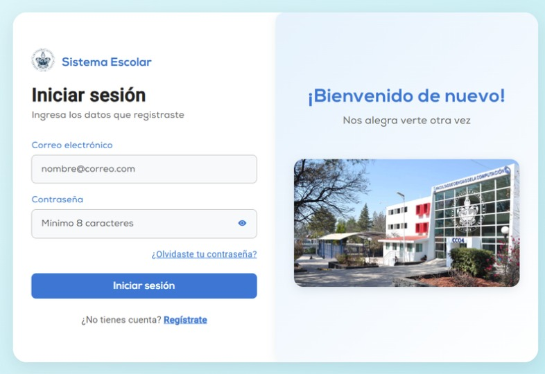

Sistema de Control Escolar

Este proyecto Full-Stack consistió en el desarrollo de una plataforma de control escolar orientada a la gestión de procesos académicos dentro de la Facultad de Ciencias de la Computación de la BUAP. El objetivo fue digitalizar y optimizar tareas como la administración de usuarios, materias, horarios y roles dentro del sistema.
La aplicación fue desarrollada con Angular en el frontend, permitiendo construir una interfaz dinámica, responsiva e interactiva. Para el backend se utilizó Django REST Framework con Python, encargado de gestionar la lógica del sistema, la comunicación con la base de datos y la exposición de servicios mediante una API REST.
El sistema incorpora un control de acceso basado en roles, permitiendo diferenciar los permisos de administradores, docentes y alumnos. Esto ayuda a proteger la información institucional y garantiza que cada usuario pueda acceder únicamente a las funciones que le corresponden.
Además, se implementaron operaciones CRUD para la gestión de usuarios, materias y horarios, junto con mecanismos de validación para mantener la integridad de los datos. También se integraron paneles visuales que facilitan la consulta de información académica y apoyan la toma de decisiones.
Como resultado, el proyecto consolidó una solución web funcional, segura y organizada, reforzando conocimientos en desarrollo Full-Stack, arquitectura cliente-servidor, APIs REST, bases de datos y control de accesos.
Resultados obtenidos
- Desarrollo de una plataforma web Full-Stack para gestión escolar.
- Implementación de una API REST para conectar frontend y backend.
- Gestión de usuarios, materias y horarios mediante operaciones CRUD.
- Control de permisos para administradores, docentes y alumnos.
- Mejora en la organización y consulta de información académica.